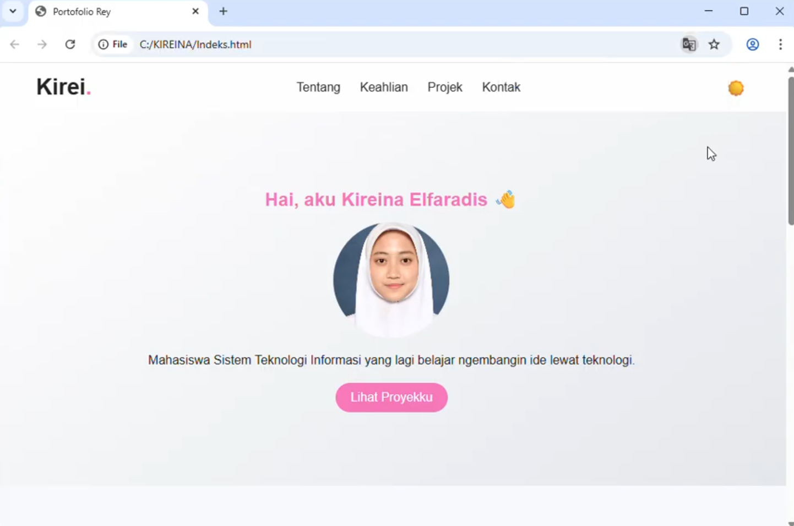
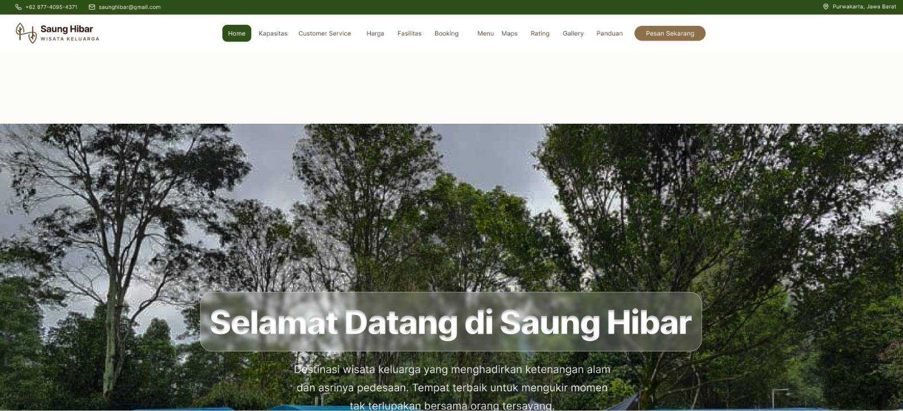
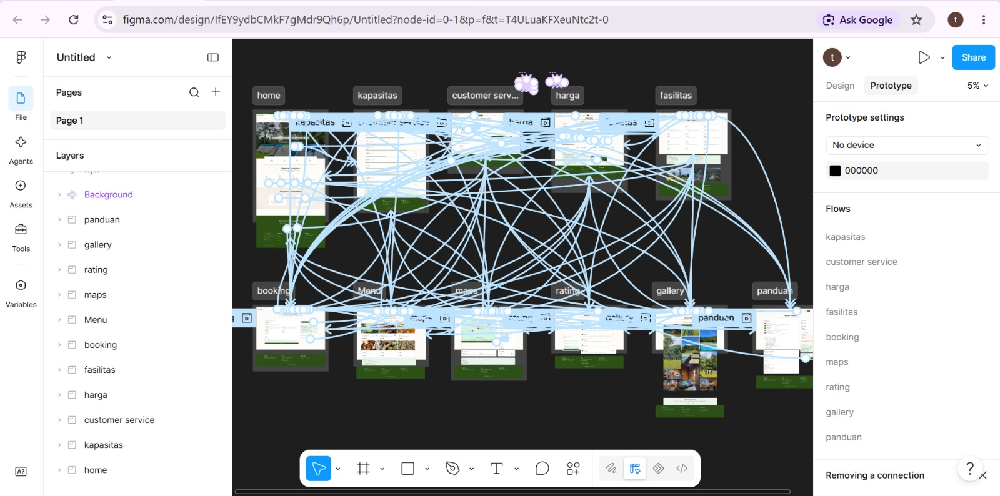
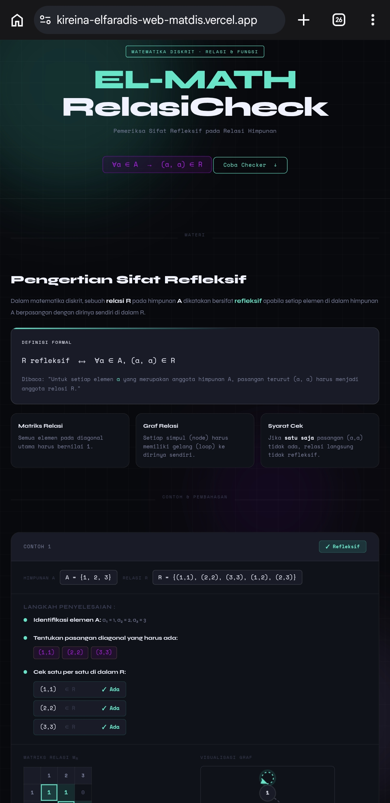
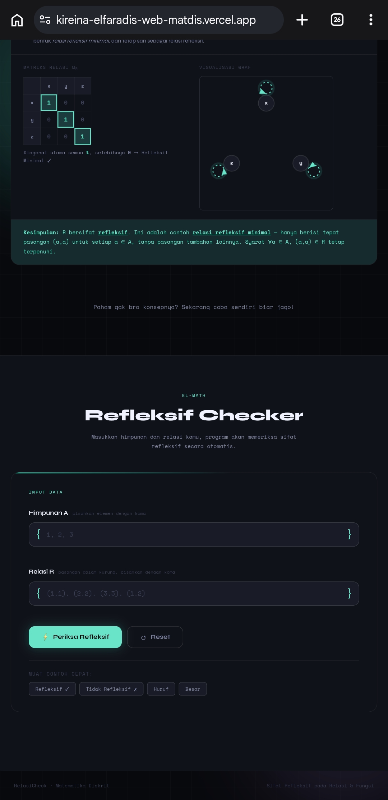
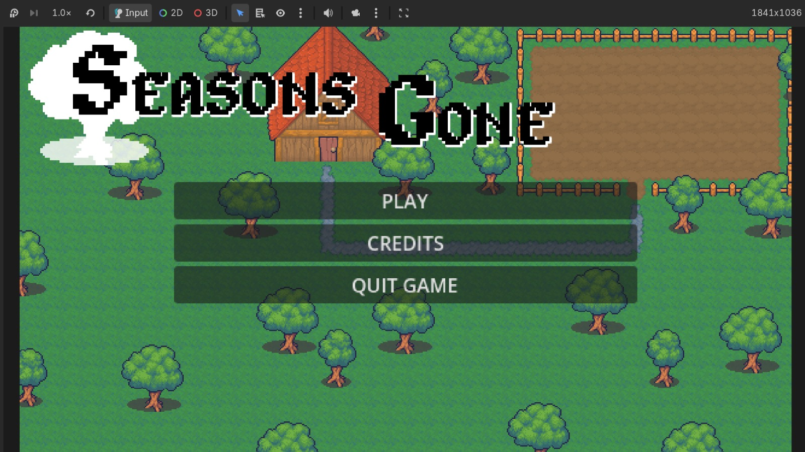
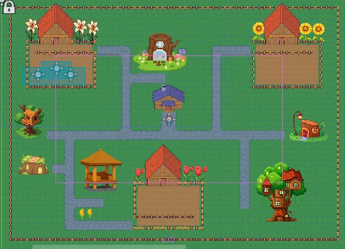

Tempat berkumpulnya hasil kerja keras, kerja kelompok, dan sedikit kepanikan.
Disini ada projek yang saya buat sendiri dan ada juga yang dibuat bareng temen-temen yang ikut terseret dalam proses pembuatannya.

Website Portofolio ini dibuat menggunakan HTML, CSS, dan JavaScript.
Website ini berisi informasi tentang saya, projek yang telah saya kerjakan, dan cara untuk menghubungi saya.


Prototype website wisata keluarga yang dirancang untuk memenuhi tugas mata kuliah Analisis Perancangan Sistem Informasi.
Prototype website ini dirancang untuk mempromosikan destinasi wisata keluarga yang memberikan informasi serta fitur seperti fasilitas, harga gallery, hingga fitur booking.
Prototype dibuat menggunakan Figma sebagai gambaran awal sebelum di kembangkan menjadi website.


Website interaktif yang dibuat untuk tugas Mata Kuliah Matematika Diskrit.
Dirancang untuk mempermudah pengecekan sifat refleksif pada relasi himpunan melalui input data, matriks, dan visualisasi graf.


Game yang dibuat menggunakan Godot untuk tugas mata kuliah Analisis Perancangan Sistem Informasi.
Mulai dari merancang konsep, membuat gameplay, sampai akhirnya diuji coba langsung oleh anak SD. Tidak dipublikasikan karena memang dari awal project ini dibuat untuk proses perancangan dan testing, bukan untuk dirilis.
| Ringkasan Portofolio Projek | |||
|---|---|---|---|
| No. | Nama Project | Detail Project | |
| Teknologi | Status | ||
| 1 | Website Portofolio | HTML, CSS, JavaScript | Selesai |
| 2 | Website Wisata Keluarga | Figma | Selesai |
| 3 | Website Relasi Refleksif | HTML, CSS, JavaScript | Selesai |
| 4 | Game Prototype | Godot | Selesai |
@ 2026 Kireina Elfaradis.